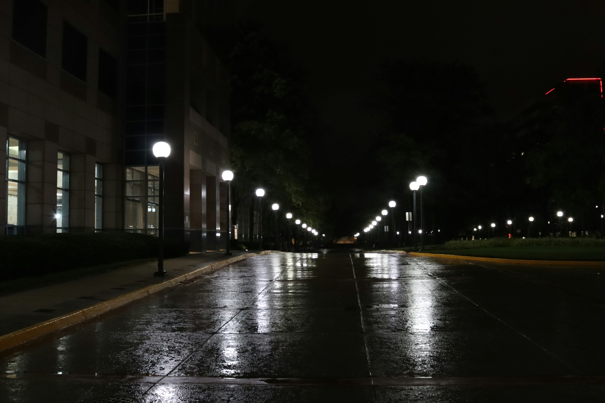

Ritmul orașului
Tehnică: Curves – ton cinematic rece prin ajustarea canalelor Blue și Red

Fotografie & Artă Vizuală
Un proiect multimedia care explorează frumusețea fotografiei urbane procesate artistic.
Vezi galeriaLensArt este un proiect multimedia realizat în cadrul cursului de Multimedia la Academia de Studii Economice din București. Fiecare imagine a fost procesată manual în Photoshop folosind tehnici studiate la curs. Folosește sliderul Before / After pentru a vedea transformarea fiecărei fotografii.
Trage sliderul pentru a vedea înainte și după editare
Tehnică: Curves – ton cinematic rece prin ajustarea canalelor Blue și Red
Tehnică: Hue/Saturation – culori dramatice, saturație +70

Tehnică: Smart Filters - Accented Edges
Tehnică: Liquify – deformarea luminilor pentru efect abstract
Tehnică: Gradient Map – efect monocrom auriu
Tehnică: Selecție + Gaussian Blur – efect de adâncime, fundal blur radius 15
Ajustarea individuală a canalelor de culoare RGB pentru tonuri cinematice reci sau calde.
Modificarea nuanței și saturației pentru culori dramatice și atmosferă intensă.
Aplicarea unui filtru de accentuare a marginilor pentru evidențierea contururilor și obținerea unui efect vizual mai clar și mai artistic.
Deformarea elementelor din imagine cu Forward Warp pentru efecte abstracte.
Înlocuirea tonurilor de gri cu un gradient personalizat negru-auriu pentru efect dramatic.
Izolarea subiectului și aplicarea blur-ului pe fundal pentru efect de adâncime (bokeh).
Echipa din spatele proiectului LensArt
| Facultatea | Marketing, ASE București |
| Anul | 2 |
| Grupa | 1723 |
| Seria | A |
| Facultatea | Marketing, ASE București |
| Anul | 2 |
| Grupa | 1725 |
| Seria | A |
Titlu proiect: LensArt – Fotografie & Artă Vizuală
Tema: Fotografie urbană procesată digital
Echipă:
• Chițu Andrei – Facultatea de Marketing, ASE București, anul 2, grupa 1723, seria A
• Colta Mihail – Facultatea de Marketing, ASE București, anul 2, grupa 1725, seria A
Contribuție: Fiecare student a realizat și procesat câte 3 imagini originale
folosind tehnici de prelucrare digitală prezentate la curs:
Curves, Hue/Saturation, Smart Filters - Accented Edges, Liquify, Gradient Map și Gaussian Blur.